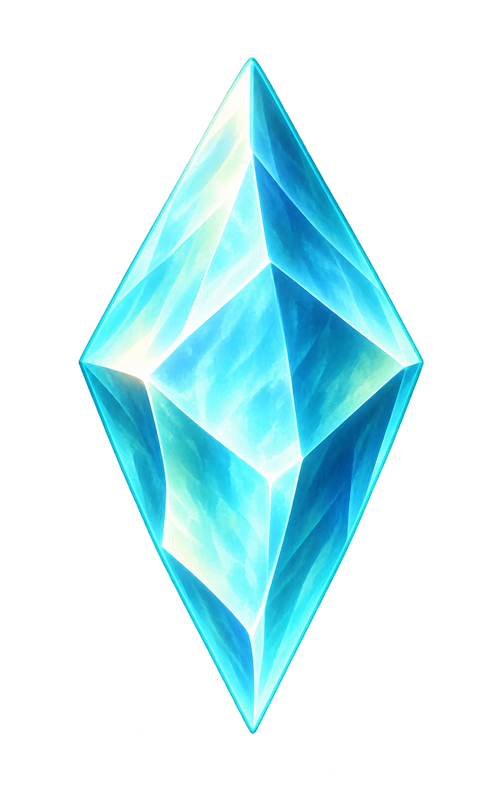
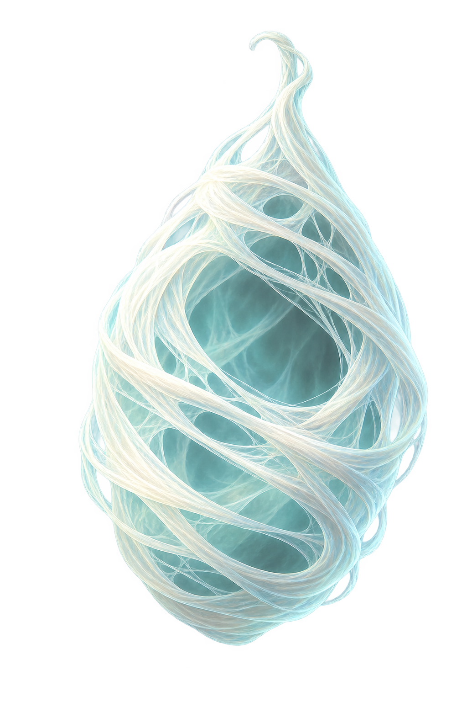

МАЛЕНЬКОЕ СКАЗОЧНОЕ ПРИКЛЮЧЕНИЕ
Лес просыпается…
Готовим тропинки и волшебные картинки

0 / 11Подойди к кристаллу и нажми E
НАЗОВИ, ЧТО ТЫ ВИДИШЬ
Произнеси слово. Взрослый поможет продолжить.
ОГОНЁК ПОМОЖЕТ РАСПУТАТЬ ПАУТИНКУ
Проведи светлячка
На каждом шаге говори ЛО

Запомни огоньки, затем повтори их порядок.
Взрослый слушает и помогает — игра не проверяет голос.
МОЖНО НЕМНОГО ОТДОХНУТЬ
Лес подождёт
ВСЕ 11 КРИСТАЛЛОВ СОБРАНЫ
Волшебное путешествие
завершено!
Лес снова полон света.
Спасибо маленькому хранителю и тебе!